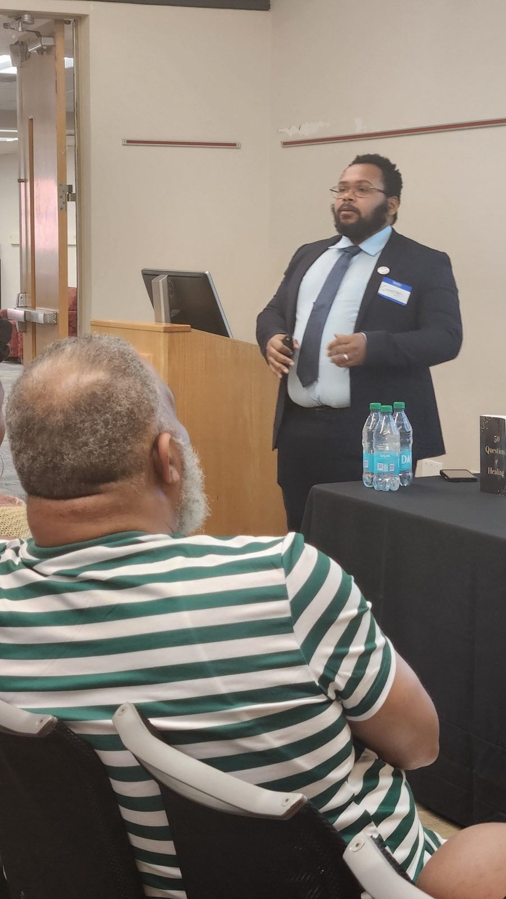
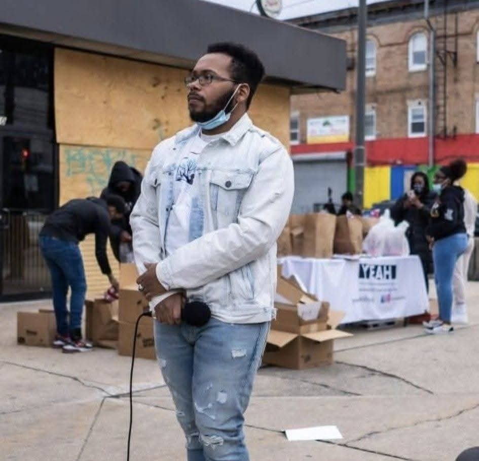
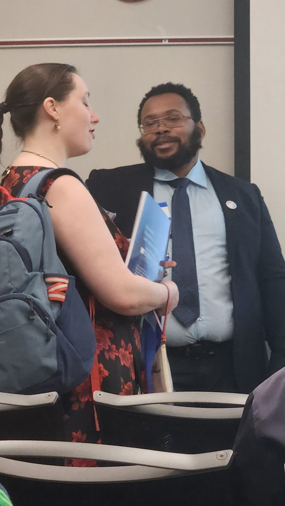
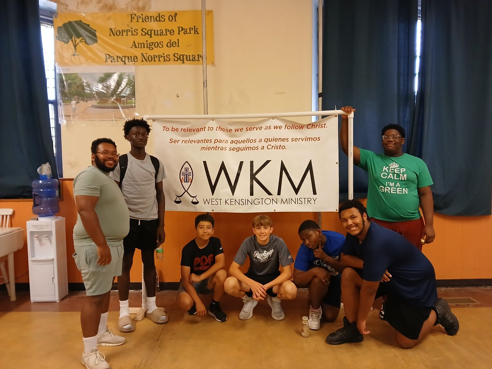
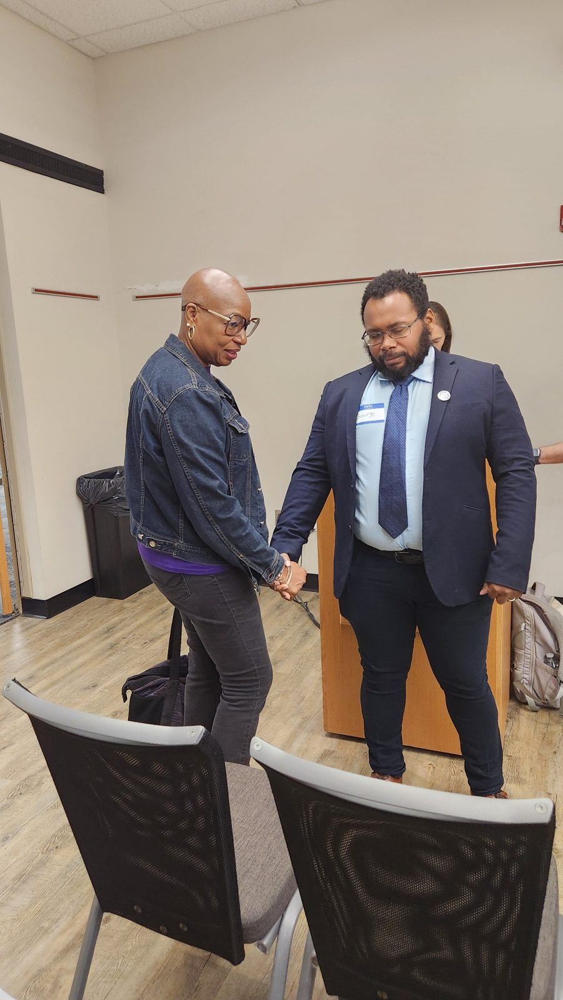
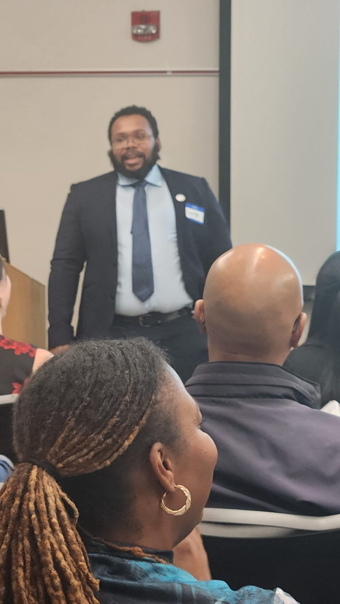
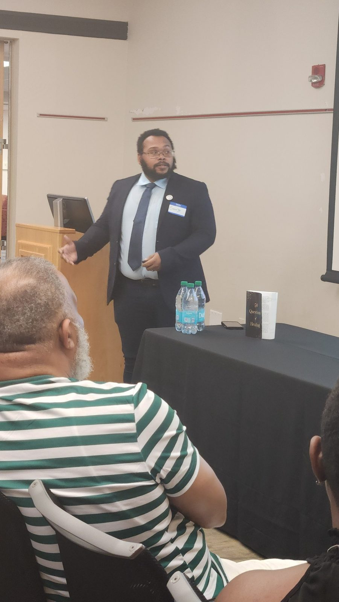
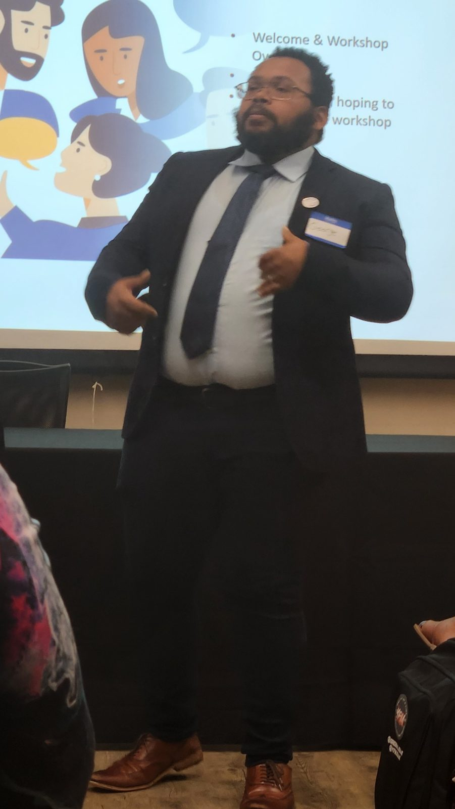

Mission
To help individuals and organizations identify and overcome the conditions that keep them trapped in cycles of survival and create pathways toward meaningful, sustainable transformation.
SURVIVAL TO SUCCESS
Transforming people, organizations, and communities.
Survival to Success helps individuals and organizations move beyond simply maintaining their current reality and create pathways toward meaningful, sustainable transformation.



There are seasons when survival is necessary. We work, solve problems, care for others, meet responsibilities, recover from setbacks, and do what is required to keep moving.
The problem begins when survival becomes a cycle—when constant activity, maintenance, and reaction consume so much of our energy that meaningful growth, purpose, vision, relationships, and transformation are pushed aside.
Organizations can experience the same pattern: producing more activity and meeting more demands without creating the conditions that help people truly develop.

What does it take for people and organizations to truly transform?
Survival to Success explores the conditions that keep people and organizations trapped in cycles of survival—and the conditions that make meaningful, sustainable transformation possible.
To help individuals and organizations identify and overcome the conditions that keep them trapped in cycles of survival and create pathways toward meaningful, sustainable transformation.
A world where individuals and organizations move beyond merely maintaining life and systems and intentionally create environments, relationships, practices, and pathways that allow people to become who they were created to be.



FOR INDIVIDUALS
For people who are working hard, handling responsibilities, and continuing to move forward—but still feel stuck, unclear, disconnected, or unsure of what comes next.

FOR ORGANIZATIONS
For schools, nonprofits, faith communities, and businesses that want to create environments where people can grow, develop, and transform—not simply meet expectations.
What if it helped produce transformation?


George Walley-Sephes is the founder of Survival to Success. His work sits at the intersection of human development, higher education, coaching, organizational development, ministry, youth development, and transformation.
His professional and academic interests center on a practical question: what helps people and organizations move beyond survival and experience meaningful transformation?
Learn More About George →Articles, research notes, reflections, and practical resources will live here as the body of work grows.
NEXT STEP
Choose the path that best fits where you are right now.